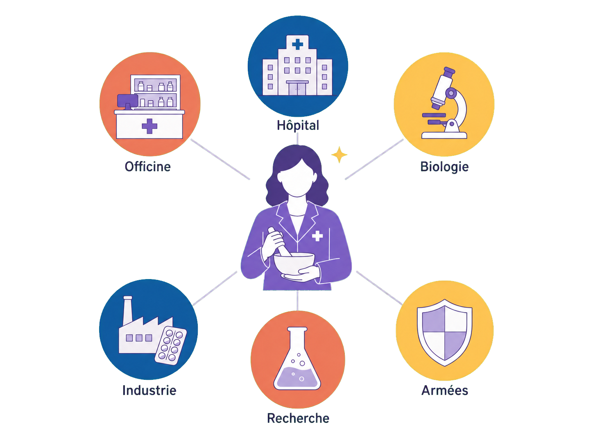
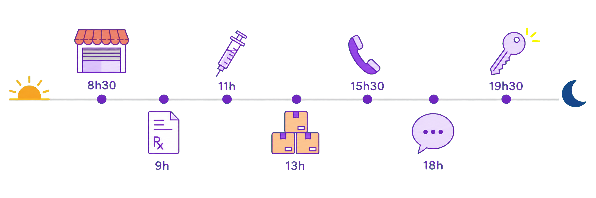
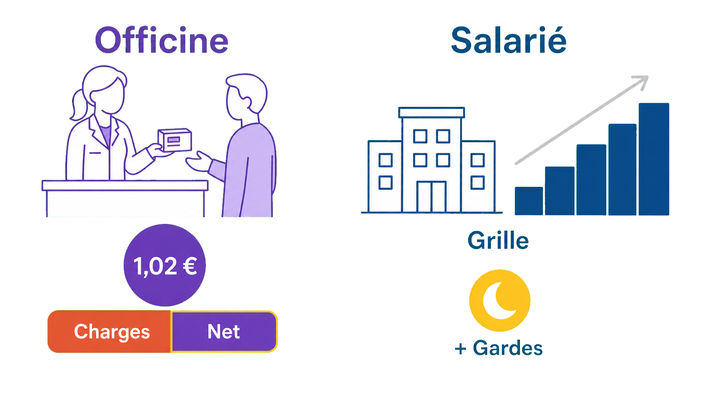
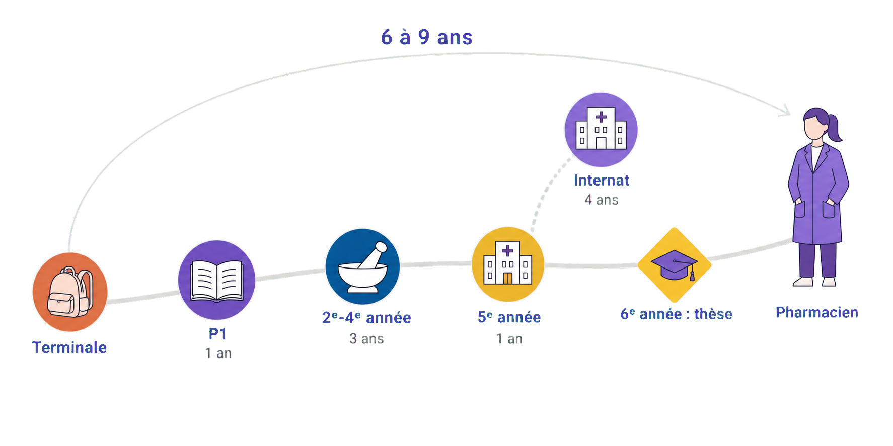
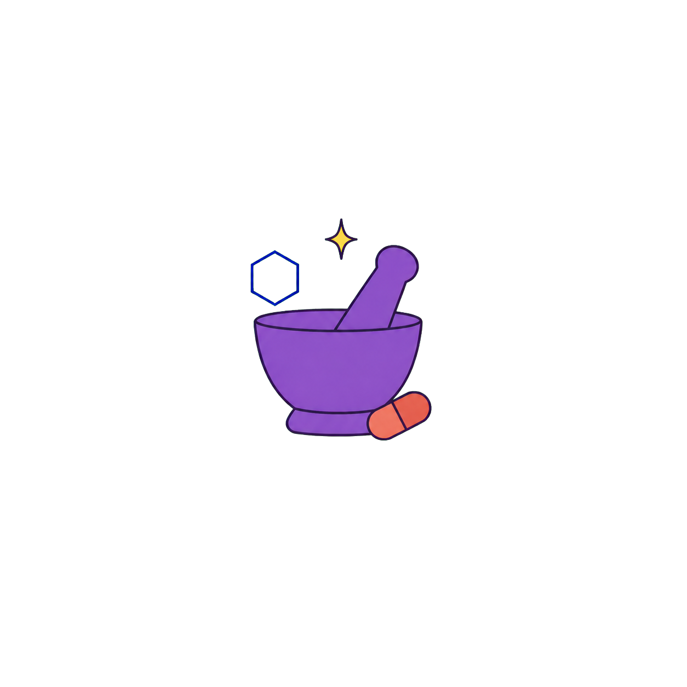

Pharmacien : le métier en vrai
4 millions de personnes entrent chaque jour dans une pharmacie en France. Le pharmacien est le soignant le plus accessible du pays : sans rendez-vous, à côté de chez toi.
Un seul diplôme, plus de 100 métiers — et un quasi plein emploi : ces dernières années, des places sont même restées vides en 2ᵉ année de pharmacie.

à placer dans : /public/images/metiers/
Petite illustration SANS fond (PNG transparent) : un pharmacien au centre entouré de six pastilles pictogrammes (officine, hôpital, biologie, industrie, recherche, armées).
Le pharmacien, c'est le soignant qu'on voit sans rendez-vous — et celui qui connaît tes médicaments mieux que personne. C'est l'expert du médicament : le dernier verrou entre une ordonnance et toi, celui qui vérifie, dose, explique — et peut décrocher son téléphone pour corriger une prescription. Et ce métier est bien plus vaste que le comptoir : il se vit aussi à l'hôpital, au laboratoire d'analyses, dans l'industrie qui invente et fabrique les traitements — plus de 100 métiers derrière un seul diplôme. Sur cette fiche, on te montre à quoi ressemble vraiment le quotidien, pour que tu puisses te projeter les yeux ouverts.
Ta journée si tu deviens pharmacien
- 1 8h30 — Ouverture. Le rideau se lève, la commande du grossiste-répartiteur (le fournisseur qui livre l'officine plusieurs fois par jour) attend déjà. On range, on allume les ordinateurs, les premiers habitués entrent.
- 2 9h — Les ordonnances. Chaque ordonnance est analysée avant d'être délivrée : interactions entre médicaments, doses, âge, poids du patient. C'est le cœur du métier — et personne ne prend rendez-vous : on accueille les gens comme ils arrivent.
- 3 11h — Vaccins et tests. Une vaccination contre la grippe, un test rapide de l'angine (le TROD, fait en quelques minutes à l'officine) pour un ado fiévreux : si le test le justifie, l'antibiotique part avec lui.
- 4 13h — Les coulisses. Commandes à passer, stocks à ranger, tiers payant (la partie remboursée directement par l'Assurance Maladie) à pointer : la face cachée de l'officine, celle qu'on ne voit jamais du comptoir.
- 5 15h30 — Le coup de fil. Une ordonnance pose problème : deux médicaments incompatibles. On appelle le médecin, on propose une alternative — c'est exactement pour ça que le pharmacien est le dernier verrou avant le patient.
- 6 18h — Le conseil. Un mal de gorge, une toux qui traîne, une inquiétude : écouter, conseiller, et surtout orienter vers le médecin quand il le faut — repérer ce qui ne peut pas attendre.
- 7 19h30 — Fermeture. Caisse, rideau — et certains soirs, la garde de nuit : l'officine de garde du secteur reste joignable jusqu'au matin pour les ordonnances urgentes. C'est un tour de rôle entre pharmacies, payé en plus.

à placer dans : /public/images/metiers/
Bandeau fin SANS fond (PNG transparent) : ligne du temps soleil → lune, sept petits pictogrammes horodatés de la journée d'officine.
Où tu peux exercer
- 1 L'officine — le soignant d'à côté. Près de 7 pharmaciens sur 10 y travaillent : adjoint salarié (35 h par semaine, le samedi souvent travaillé) ou titulaire, propriétaire et chef d'entreprise (à ce titre, c'est lui qui fixe ses horaires et ceux de son officine, dans les limites des tours de garde) (souvent 45 à 55 h). Le comptoir, les ordonnances, les vaccins, une équipe à faire tourner : la proximité au quotidien — avec des gardes de nuit à tour de rôle.
- 2 L'hôpital et la biologie — la voie de l'internat. Le pharmacien hospitalier est le gardien du circuit du médicament (des chimiothérapies préparées en zone stérile à la stérilisation des instruments de bloc) ; le biologiste médical valide les analyses de sang et conseille les médecins. On y accède par le concours de l'internat en 5ᵉ année — 4 ans payés par l'hôpital. En face : 10 demi-journées par semaine, 48 h maximum légal, astreintes en plus.
- 3 L'industrie — l'expert du médicament à grande échelle. Recherche, essais cliniques, production, qualité, affaires réglementaires : tout un éventail de métiers, dans un secteur où sur 10 000 molécules étudiées, une seule devient un médicament. Des semaines de cadre (≈ 35 à 40 h), des déplacements — et les salaires les plus élevés en début de carrière : ≈ 49 300 € brut par an en région, ≈ 57 500 € en Île-de-France.
Combien tu gagnes — et comment
- 1 À l'officine : la boîte, l'honoraire — et la grille. L'officine se paie sur chaque boîte délivrée : un honoraire de dispensation de 1,02 € par boîte plus une marge encadrée par l'État, une prime annuelle sur objectifs de santé publique (génériques délivrés, entretiens, vaccinations), et des actes payés à l'unité (vaccination : 7,50 €, ou 9,60 € si le pharmacien prescrit et vaccine ; nuit de garde : 200 € d'astreinte + 10 à 20 € par ordonnance selon l'heure). L'adjoint salarié est payé sur une grille nationale : ≈ 2 900 € net dès l'embauche pour 35 h par semaine — et le marché réel paie souvent au-dessus de la grille, faute de candidats. Le titulaire se paie en dernier : ≈ 5 000 € net par mois en moyenne, pour des semaines de 45 à 55 h — le détail est dans les livrets.
- 2 À l'hôpital et au laboratoire : une grille + des gardes. Le pharmacien hospitalier et le biologiste des hôpitaux sont payés sur la même grille que les médecins hospitaliers : de ≈ 3 900 € net par mois au 1ᵉʳ échelon à ≈ 7 900 € au 13ᵉ, pour 10 demi-journées par semaine (48 h maximum légal), astreintes payées en plus. En laboratoire privé, le biologiste gagne davantage : ≈ 5 000 à 6 000 € net par mois, et nettement plus en devenant associé du laboratoire.
- 3 Et pendant les études ? La fac coûte ≈ 280 à 360 € par an (droits d'inscription 178 € puis 254 € en 2ᵉ cycle, + contribution vie étudiante 105 € — montants 2025-2026) — et l'argent arrive avant le diplôme : le stage de 6ᵉ année est payé ≈ 600 à 680 € net par mois, porté à ≈ 1 037 € dès la rentrée 2026. Ceux qui choisissent l'internat deviennent salariés de l'hôpital pendant 4 ans : de ≈ 1 600 € à ≈ 1 950 € net par mois, gardes en plus — pour de vraies semaines (48 h maximum légal, souvent dépassées).
📖 L'argent pendant les études, année par année›
La vérité du métier : en filière courte (officine, industrie), tu restes étudiant 6 ans, avec un stage payé à la fin ; en filière internat, tu deviens salarié de l'hôpital dès la 6ᵉ année d'études — payé exactement comme un interne de médecine (statut unique de l'interne).
| Moment des études | ≈ Montant | Ce qui est compté |
|---|---|---|
| De la P1 à la 3ᵉ année : la fac | tu paies ≈ 283 € / an | droits d'inscription 178 € + CVEC 105 € (montants 2025-2026) — les boursiers en sont exonérés |
| De la 4ᵉ à la 6ᵉ année | tu paies ≈ 359 € / an | droits du 2ᵉ cycle 254 € + CVEC 105 € — boursiers exonérés là aussi |
| Stages courts (2ᵉ-4ᵉ année) | ≈ 0 € | stage d'initiation en officine et stages d'application : souvent moins de 2 mois, donc pas de gratification obligatoire |
| 5ᵉ année hospitalo-universitaire | quelques centaines d'€ / mois | mi-temps à l'hôpital avec le statut d'étudiant hospitalier — indemnité modeste, variable selon les facultés |
| 6ᵉ année : le stage long (officine ou industrie) | ≈ 600 – 680 € net / mois | gratification minimale de stage (4,50 € par heure de présence en 2026), à temps plein |
| Le même stage, dès la rentrée 2026 | ≈ 1 037 € net / mois | réforme du 3ᵉ cycle : indemnité revalorisée, financée par l'Assurance maladie et avancée par l'officine, congés payés et droits sociaux (maladie, maternité, retraite) |
| Internat 1ʳᵉ année | ≈ 1 600 € net / mois | base ≈ 1 300 € (19 406,35 € brut par an, arrêté du 8 juillet 2022 modifié) + indemnité de sujétion 435,18 € brut/mois, versée les 4 premiers semestres |
| Internat 2ᵉ année | ≈ 1 750 € | base + indemnité de sujétion |
| Internat 3ᵉ année | ≈ 1 850 € | base seule : la sujétion s'arrête, mais la base grimpe avec l'ancienneté (≈ 2 367 € brut/mois) |
| Internat 4ᵉ année (docteur junior) | ≈ 1 900 – 1 950 € | dernière année en autonomie supervisée ; gardes payées en plus (234,80 € brut la nuit, soit ≈ 180 € net) |
⏱️ Le temps en face pour l'interne : 48 h par semaine maximum légal, gardes comprises — souvent dépassées en stage hospitalier. L'internat de pharmacie (biologie médicale ou pharmacie hospitalière) partage la grille des internes de médecine : mêmes émoluments, mêmes indemnités.
Sources : arrêté du 8 juillet 2022 modifié (émoluments et indemnités des internes, via ISNI) ; Le Moniteur des pharmacies (janvier 2026) pour le stage de 6ᵉ année ; service-public.fr (droits universitaires 2025-2026).
📖 La grille du pharmacien adjoint — les coefficients 2026›
La grille nationale de la convention collective de la pharmacie d'officine : brut mensuel = (coefficient ÷ 100) × valeur du point (5,278 € en 2026) × 151,67 h. Depuis le 1ᵉʳ novembre 2025, les coefficients 400 et 430 ont disparu : on embauche un adjoint au 470 minimum — et la montée se fait ensuite à l'ancienneté, automatiquement.
| Coefficient | Le moment | Brut mensuel (35 h) | ≈ net / mois |
|---|---|---|---|
| 470 | à l'embauche | ≈ 3 762 € | ≈ 2 900 € |
| 500 | automatique après 1 an | ≈ 4 003 € | ≈ 3 100 € |
| 520 | après 5 ans | ≈ 4 163 € | ≈ 3 200 € |
| 530 | après 10 ans | ≈ 4 243 € | ≈ 3 270 € |
| 540 | après 15 ans | ≈ 4 323 € | ≈ 3 330 € |
| 550 | après 20 ans | ≈ 4 403 € | ≈ 3 390 € |
| 600 à 800 | responsabilités élargies, gérance (négocié) | ≈ 4 803 à 6 404 € | ≈ 3 700 à 4 930 € |
Valeur du point 2026 : 5,278 € (accord du 19 janvier 2026, étendu par arrêté au printemps 2026) — soit ≈ 45 150 € brut par an à l'embauche ; selon l'arrondi retenu, les sources varient de quelques centimes autour de ces montants. Net estimé avant impôt (brut − 23 % environ, statut cadre). S'ajoute une prime d'ancienneté : +3 % après 3 ans, jusqu'à +15 % après 15 ans.
⏱️ Le temps en face : temps plein = 35 h par semaine, le samedi souvent travaillé, plafond conventionnel 46 h sur une semaine (44 h en moyenne sur 12 semaines). Et le marché réel paie souvent au-dessus de la grille, faute de candidats : des annonces dépassent 4 000 € brut pour des débutants.
À l'hôpital, le pharmacien est payé sur la grille des praticiens hospitaliers — la même que les médecins : de ≈ 3 900 € net (échelon 1) à ≈ 7 900 € net (échelon 13, en fin de carrière, ≈ 30 ans), astreintes en plus (grille au 1ᵉʳ juillet 2023 : 55 607,79 € → 112 416,56 € brut par an, source MACSF).
📖 Le titulaire n'a pas de grille : la simulation›
Le titulaire est un chef d'entreprise : pas de salaire fixe. Les hypothèses, toutes affichées : sur 100 € de chiffre d'affaires, environ deux tiers repartent en achat des médicaments ; il reste ≈ un tiers de marge (l'honoraire de 1,02 € par boîte + la marge encadrée par l'État + les actes : vaccination 7,50 – 9,60 €, tests, gardes) pour payer l'équipe, le loyer, l'emprunt — et en dernier, le titulaire. Revenus nets avant impôt, tirés des bilans 2024 des cabinets comptables spécialisés.
| Taille de l'officine (chiffre d'affaires annuel) | ≈ revenu net / mois du titulaire | Repère |
|---|---|---|
| Petite officine (moins de 1 M€) | ≈ 2 300 € | ≈ 28 100 € net par an — parfois moins bien payé que son propre adjoint |
| Officine moyenne (≈ 1,5 M€) | ≈ 4 500 – 5 500 € | le cas type en zone rurale ou périurbaine |
| Grande officine (≈ 2,5 M€) | ≈ 6 500 – 7 500 € | centre-ville, zone commerçante (estimation : à 3 M€ de CA, le revenu dépasse la moyenne de ≈ 80 %) |
| Moyenne nationale | ≈ 5 000 € | 60 500 € net par an (étude Extencia 2025, sur 1 853 officines) ; 62 200 € (Centre de Gestion Pharmaceutique) |
⏱️ Le temps en face : des semaines souvent de 45 à 55 h, samedi compris, plus les gardes (fourchette d'usage dans la profession — il n'existe pas de statistique nationale récente, on te le dit honnêtement). Une officine s'achète — souvent plus d'un million d'euros — avec un emprunt remboursé sur 10 à 12 ans : les premières années, une partie du revenu y passe.
Garde : 200 € d'astreinte par nuit, + 10 € par ordonnance délivrée en soirée (20h-minuit et 6h-8h), 20 € en pleine nuit (minuit-6h), 6 € le dimanche et les jours fériés (convention pharmaceutique, montants en vigueur depuis janvier 2025).

à placer dans : /public/images/metiers/
Petite illustration SANS fond (PNG transparent) : scène officine (boîte délivrée → 1,02 € → barre charges/net) à gauche, scène salarié (escalier de grille + gardes) à droite.
Le chemin depuis la Terminale

à placer dans : /public/images/metiers/
Bandeau SANS fond (PNG transparent) : chemin montant à six jalons avec durées, losange thèse en 6ᵉ année, embranchement internat, arc « 6 à 9 ans ».
- 1 Terminale — Parcoursup. Tu formules tes vœux pour rejoindre les études de santé. Un dossier régulier et des spécialités scientifiques — la chimie et la biologie serviront particulièrement en pharmacie — sont tes meilleurs alliés.
- 2 La P1 (voies PASS ou LAS) — 1 an. L'année d'entrée, commune avec médecine : les bases scientifiques, et un classement qui décide de ton admission en 2ᵉ année. Ce n'est pas réservé aux génies : ceux qui la réussissent sont très souvent ceux qui arrivent avec une vraie méthode de travail dès les premières semaines. Et la pharmacie fait partie des filières où des places restent parfois non pourvues : la porte est plus large qu'on ne le croit.
- 3 2ᵉ à 4ᵉ année — le tronc commun, 3 ans. La sélection est derrière toi : quand on travaille et qu'on valide, le passage en année supérieure est la règle. Sciences du médicament, travaux pratiques dans presque toutes les matières, stages dès la 2ᵉ année — et le choix de ta filière (officine, industrie, internat) à partir de la 4ᵉ année.
- 4 5ᵉ année — l'année hospitalo-universitaire, 1 an. Mi-temps à l'hôpital, mi-temps en cours : tu découvres le terrain avec le statut d'étudiant hospitalier. C'est aussi l'année du concours de l'internat, pour ceux qui visent la biologie médicale ou la pharmacie hospitalière.
- 5 6ᵉ année — filière courte : le stage et la thèse. Une année de terrain : un long stage à temps plein en officine ou en industrie — indemnisé, et revalorisé à ≈ 1 037 € net par mois par la réforme de 2026 — puis ta thèse d'exercice : te voilà docteur en pharmacie en 6 ans, prêt à exercer, ou à ajouter un Master (qualité, affaires réglementaires, recherche clinique…) pour l'industrie.
- 6 Ou l'internat — 4 ans, salarié de l'hôpital. Pour la biologie médicale ou la pharmacie hospitalière : 4 années de stages semestriels payés par l'hôpital, la thèse en chemin, un mémoire de spécialité — et le titre à la clé, en 9 ans au total après le bac.
À suivre : une « licence santé » unique a été annoncée en avril 2026 pour remplacer le PASS et la LAS, visée pour la rentrée 2027 — le calendrier peut encore bouger, et le PASS et la LAS restent en place pour la rentrée 2026. Côté pharmacie, la réforme du 3ᵉ cycle s'applique dès la rentrée 2026 : le stage de 6ᵉ année passe à ≈ 1 037 € net par mois, avec congés payés et droits sociaux. Quel que soit le nom de l'année d'entrée, la première année restera classante — la méthode de travail restera le nerf de la guerre.

à placer dans : /public/images/metiers/
Mini-illustration SANS fond (PNG transparent) : un mortier et son pilon violets, une gélule et une petite molécule à côté. Aucun texte.